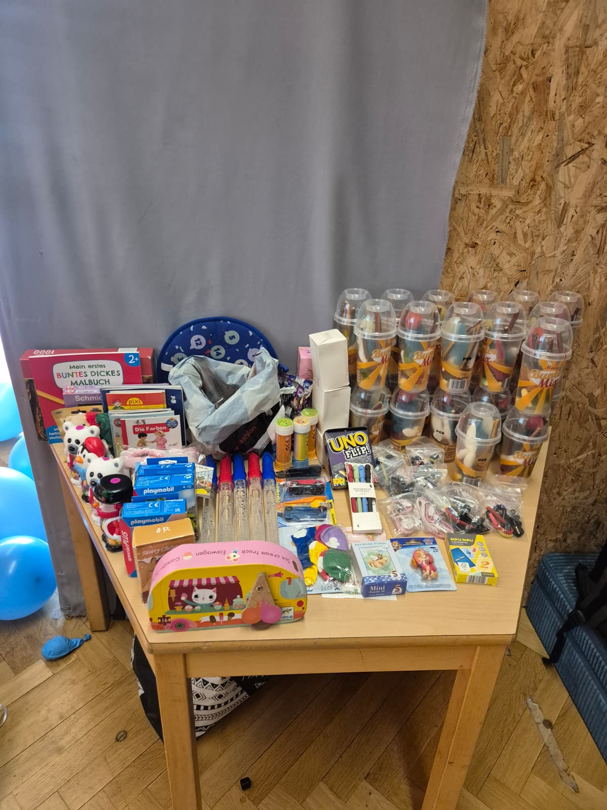
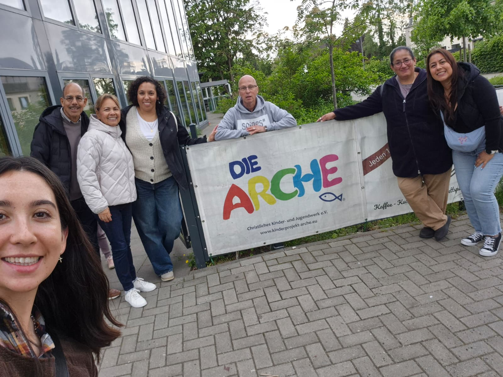
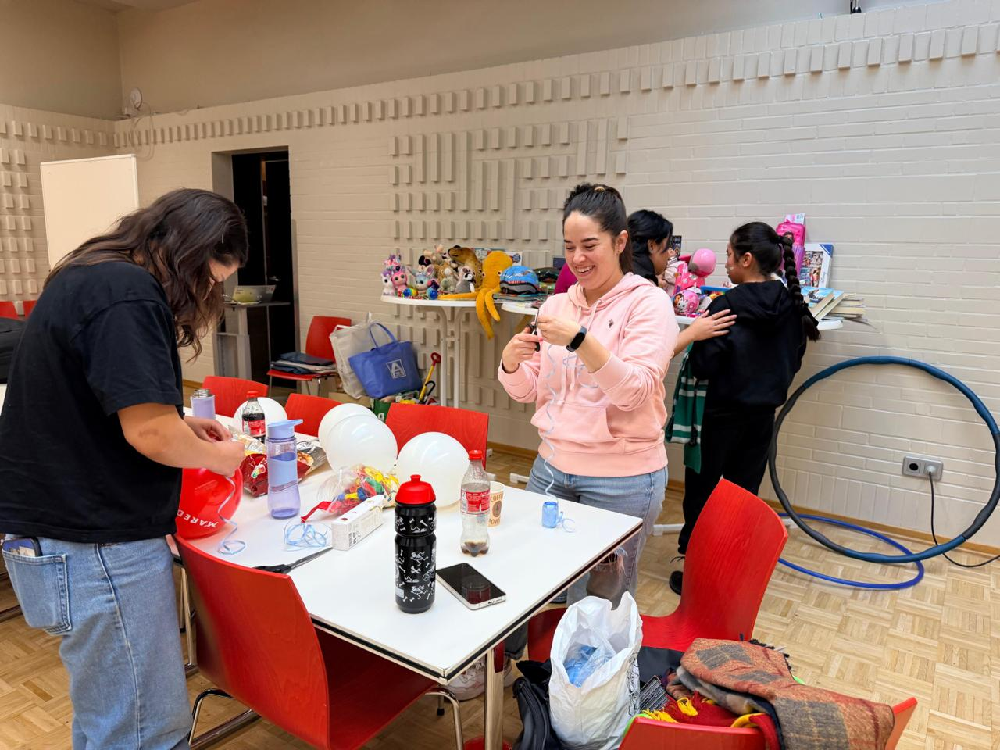
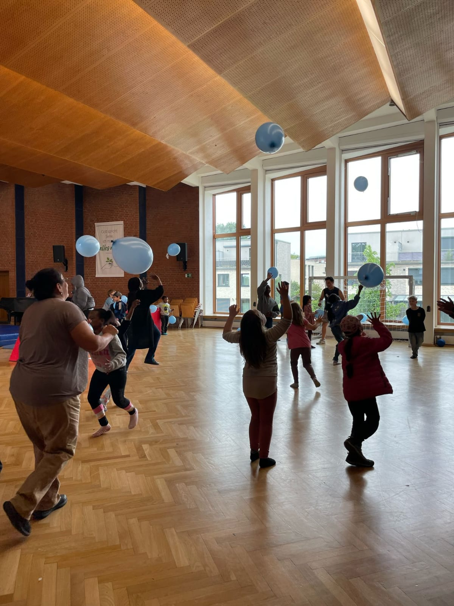
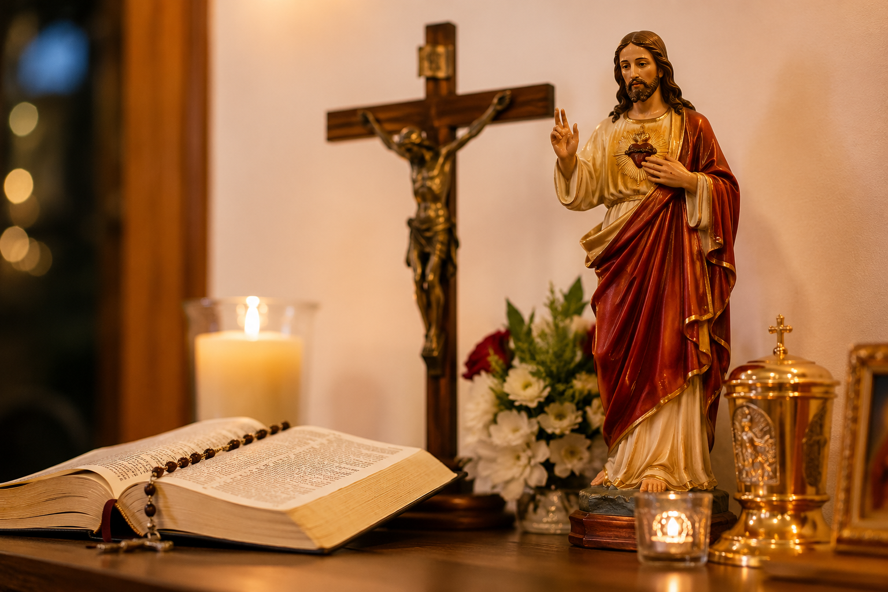
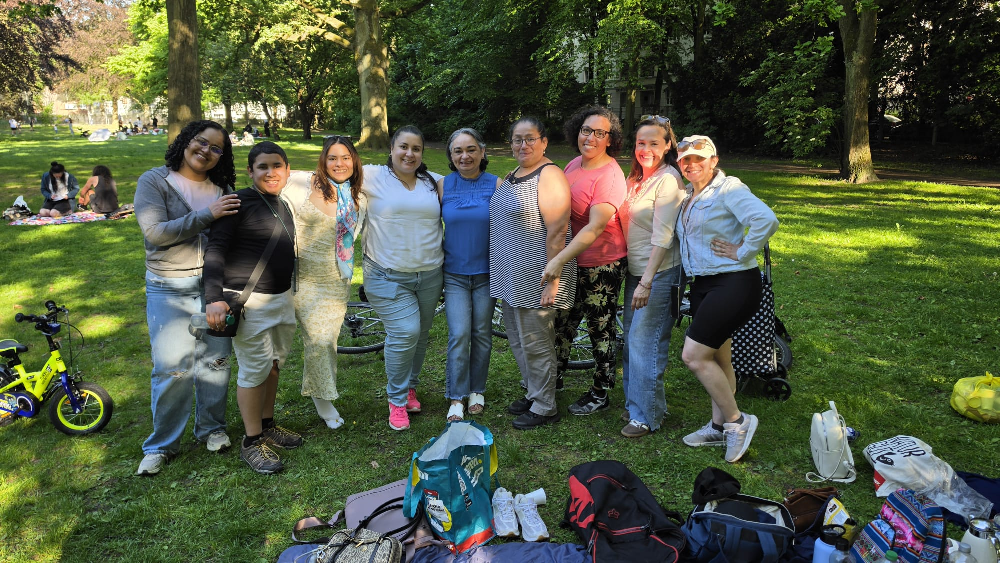
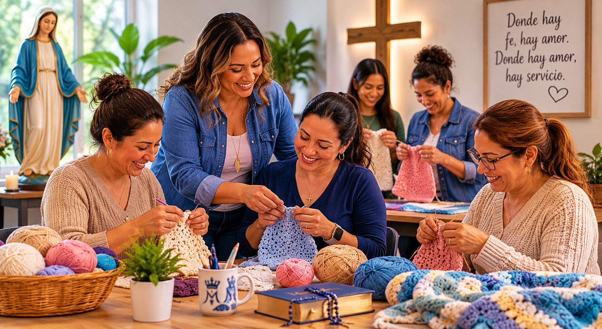

Compartiendo alegría
Preparamos donaciones, regalos y detalles con cariño para llevar esperanza a quienes más lo necesitan.
En Jesús y María en Acción creemos que la fe debe vivirse a través del servicio. Nuestros programas buscan responder a las necesidades espirituales, humanas y sociales de nuestra comunidad, promoviendo la solidaridad, la integración y el amor cristiano.

Atendemos necesidades básicas y brindamos acompañamiento a personas y familias en situación de vulnerabilidad, especialmente a quienes necesitan apoyo humano, material y espiritual.

Preparamos donaciones, regalos y detalles con cariño para llevar esperanza a quienes más lo necesitan.

Cada actividad nace del esfuerzo conjunto de voluntarios que ofrecen su tiempo y corazón.

Promovemos espacios seguros, alegres y fraternos para los niños, donde puedan compartir, jugar, sentirse acompañados y vivir momentos de esperanza dentro de un ambiente comunitario.

Nuestra misión no solo busca ayudar materialmente, sino también fortalecer la fe, la oración y la vida espiritual de nuestra comunidad hispanohablante en Hamburgo.

Creemos en la importancia de crear espacios de encuentro, integración y fraternidad, donde las familias puedan conocerse, acompañarse y crecer juntas en la fe.

Queremos promover herramientas prácticas que ayuden al desarrollo personal, la integración y el crecimiento de personas y familias dentro de nuestra comunidad.
Dios nos llama a ser instrumentos de amor, esperanza y solidaridad. Si deseas apoyar alguno de nuestros programas, poner tus talentos al servicio del prójimo o simplemente conocer más sobre esta misión, te invitamos a contactarnos.
Quiero participar